De cinco fuentes de datos a una sola decisión.
Dos días al mes para decidir qué lotes cubren la demanda de cada país, con los datos repartidos entre Excel, ERP y PDF. Lideré el diseño de una herramienta que lo reúne todo, de la demanda a la mezcla.
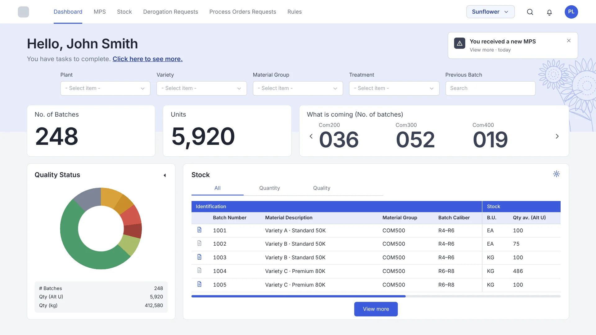
Panel: stock, estado de calidad y lo que está por llegar, con un aviso cuando llega un nuevo plan mensual.
Pantallas recreadas con la misma estructura, contenidos y flujos del producto real. Solo cambian el estilo visual, los nombres y los datos, por confidencialidad.
La respuesta estaba en cinco sitios a la vez.
Cada mes llega la demanda de cada país, y los planificadores deben encontrar los lotes que la cubren con la calidad y las normas exigidas.
Para ello cruzaban Excel, exportaciones del ERP desactualizadas, PDF de calidad y reglas que nadie tenía por escrito. Si un lote no bastaba, mezclaban varios y pedían aprobación por correo.
Demanda, stock, calidad y reglas en el mismo lugar, conectados al ERP.


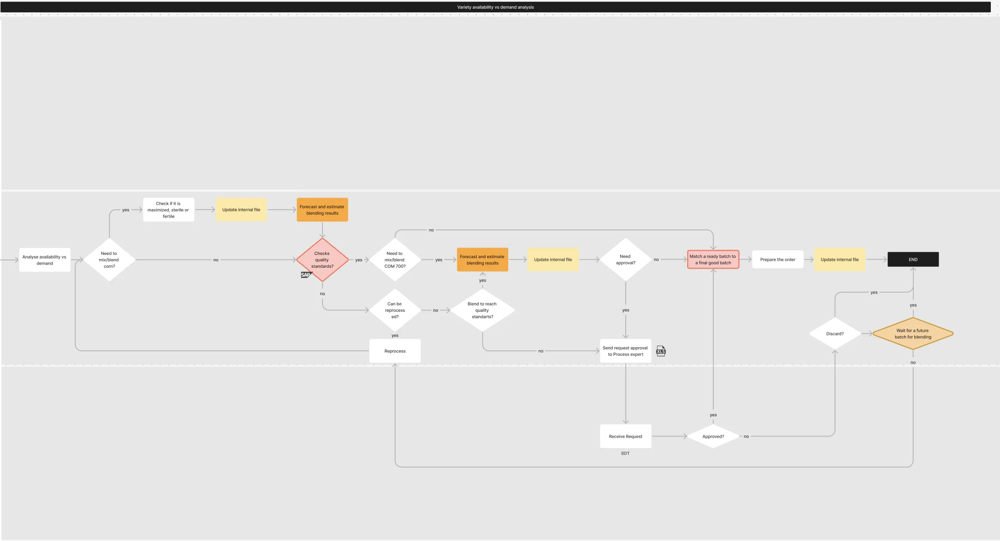
Seis semanas del kick-off al diseño validado.
Excel, ERP y PDF, con un stock casi nunca actualizado.
Cada país tenía su propio proceso y sus propias columnas.
Todo cruzado a mano en un plazo de dos días.
Mucho dato de stock y calidad, sin una visión clara.
Tantas reglas que dominarlas llevaba mucho tiempo.
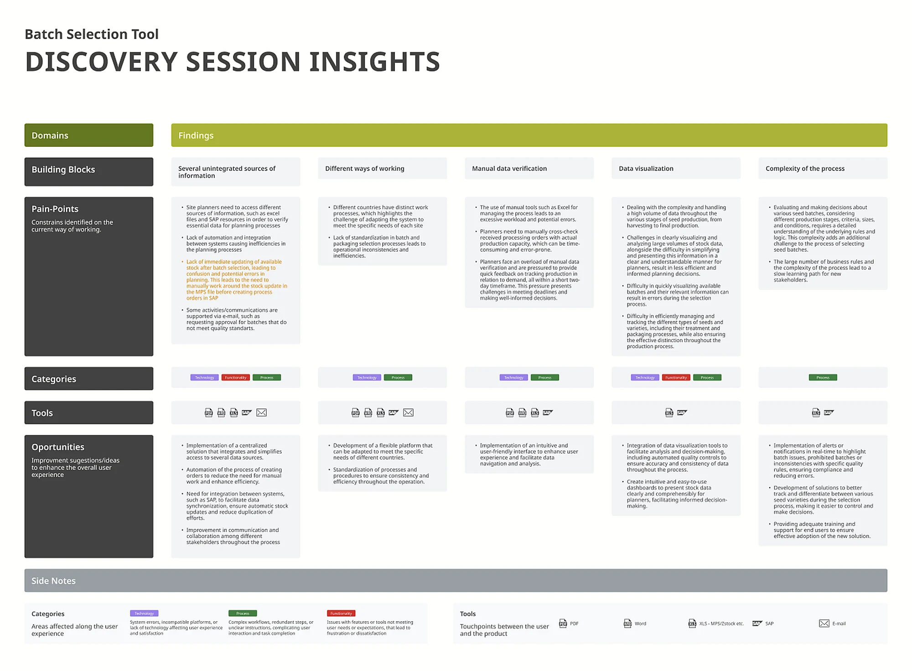
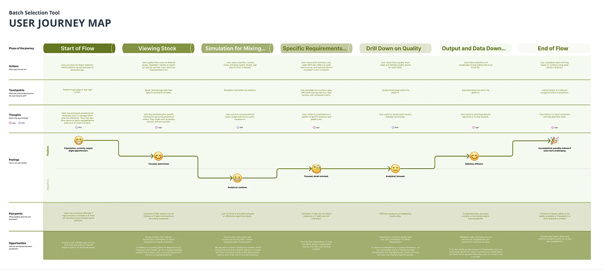
Planificadores de planta
Asignan stock a cada demanda, mezclan cuando hace falta y preparan la orden de producción.
Necesitan: una sola vista, datos fiables y las reglas a mano.
Planificadores regionales
Envían el plan mensual y siguen el stock y el avance en todas las plantas.
Necesitan: una vista más ligera de la demanda y el stock.
Expertos de proceso
Aprueban o rechazan los lotes fuera de especificación.
Necesitan: el contexto completo de cada petición, sin hilos de correo.

Descubrir
El proceso real, mapeado con 4 personas del cliente.
- 3 sesiones de knowledge sharing
- Mapa del proceso AS-IS
- Journey map y hallazgos
Cocrear
El producto, con quienes iban a usarlo.
- Taller de cocreación + seguimiento
- Story map, 60+ user stories
- Navegación para dos perfiles
Testear
Prototipo navegable con planificadores reales.
- 6 sesiones moderadas en remoto
- Planificadores de 5 países
- 12 tareas, jornada completa
Entregar
Con el equipo después del handover.
- Handover a desarrollo
- 6 sprints de seguimiento
- Puesta en producción en septiembre de 2024
Los entregables detrás de cada paso. Pulsa una pestaña y cualquier imagen para ampliarla.
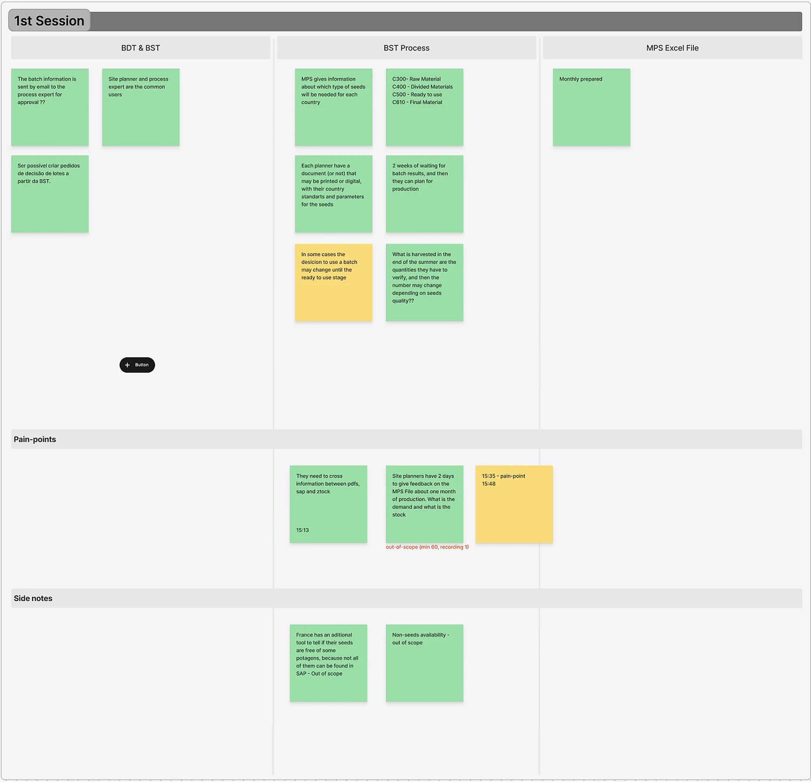
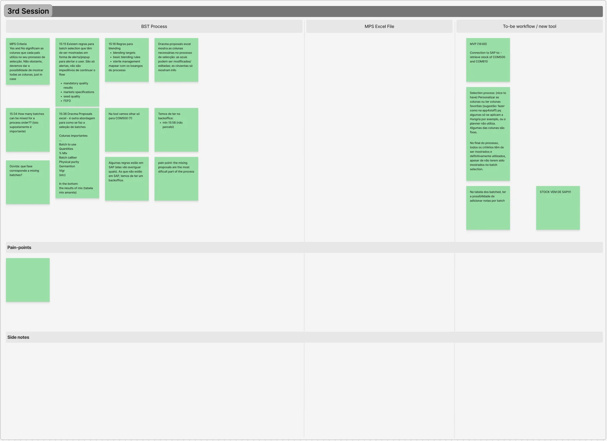

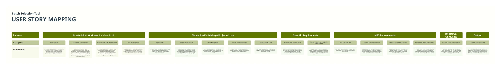

Arrastra el control para pasar de la baja fidelidad al diseño final.
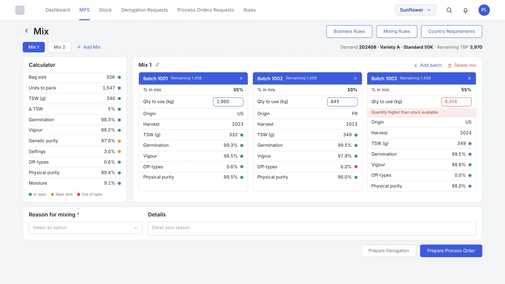
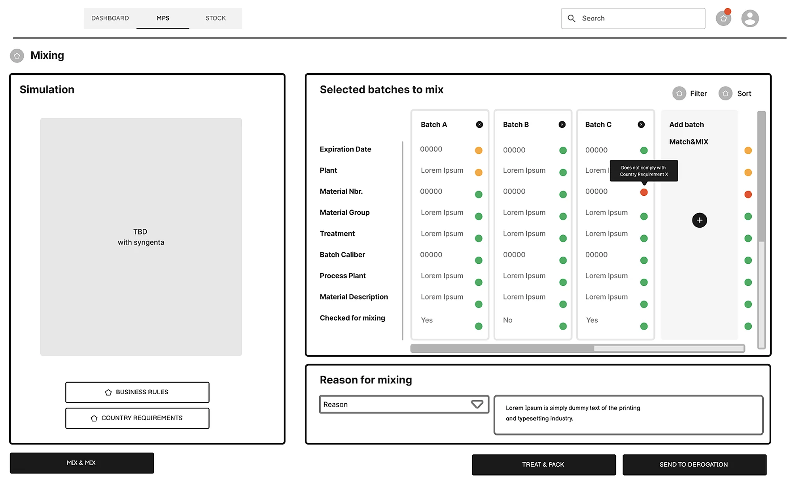
Baja fidelidadLotes uno junto a otro; la simulación aún era una pregunta abierta.
FinalLa calculadora en tiempo real, cada parámetro de calidad validado contra las reglas y un motivo de mezcla obligatorio.


Baja fidelidadUna lista de demandas con tres contadores.
FinalTres colas de trabajo, gráficos de resumen, notas y cumplimiento parcial (+2) en una sola demanda.


Baja fidelidadCabecera de demanda y tabla de stock con cantidades en línea.
FinalDemanda y stock lado a lado, grupos para ordenar más de 30 columnas y calidad validada en línea según cada país.
Las decisiones que definieron el producto.
Empezar por la demanda, no por el stock
El primer concepto empezaba por el stock. Lo cambiamos por la demanda mensual, organizada en tres colas de trabajo.
Por quéLos planificadores piensan en pedidos que cumplir, no en lotes que explorar.

Simular antes de mezclar
Una calculadora proyecta la calidad de la mezcla en tiempo real, validada contra las reglas.
Por quéLa mezcla era el paso con más errores. Ver antes el resultado elimina las conjeturas.

Un lote, muchas demandas
Las cantidades se reparten entre varias demandas, con avisos donde se incumple un requisito del país.
Por quéEn la realidad, un buen lote sirve a más de un país.

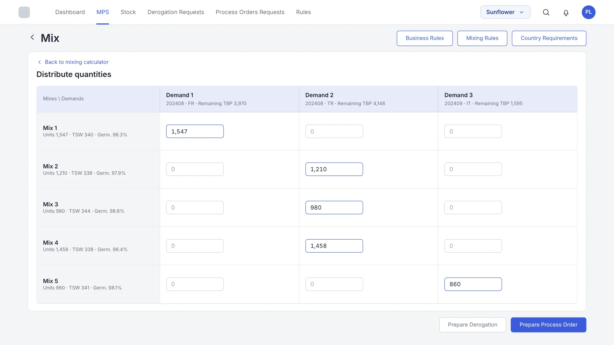
Aprobaciones dentro del flujo, no por correo
Los lotes fuera de especificación van a una cola de derogación con su estado. Solo lo aprobado llega a producción.
Por quéCada decisión conserva su motivo, fecha y responsable, para que nada se pierda en una bandeja de entrada.


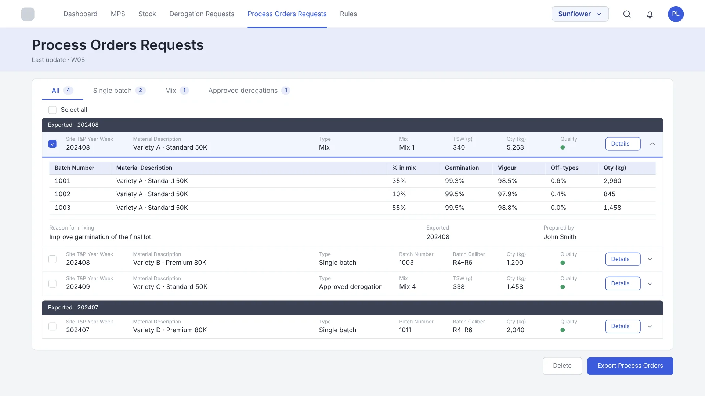
Un color por cultivo
La cabecera cambia de color e ilustración según el cultivo (en el real, amarillo para el girasol y oscuro para el maíz).
Por quéLos planificadores cambian de cultivo todo el día. Basta un vistazo para saber dónde estás.
Los tests nos mostraron las excepciones.
Seis sesiones moderadas con planificadores de cinco países y doce tareas sobre un prototipo navegable.
Restricciones entre países
Algunos países no pueden recibir stock de otros: esos lotes se señalan antes de asignarlos.
Países que nunca mezclan
Algunos países nunca mezclan: la opción solo aparece donde aplica.
Como planificador de planta, quiero ver la calidad de la mezcla antes de confirmarla para no enviar a producción un lote fuera de especificación.
- Cada parámetro muestra su estado frente a las reglas del país de destino.
- Las cantidades superiores al stock disponible se bloquean.
- El motivo de la mezcla es obligatorio para continuar.
En producción, y solicitada por otros.
En producción desde septiembre de 2024 y en ocho países en pocos meses. Adopción global prevista en un año.
El jefe de proyecto del cliente y su responsable para Europa y Oriente Medio confirmaron que el producto cumplía las expectativas.
Feedback del cliente tras la puesta en producciónLa mejor señal llegó sola: un país vecino, con otras semillas, pidió su propia versión. Ampliarla a más cultivos ya está en los planes de la empresa.

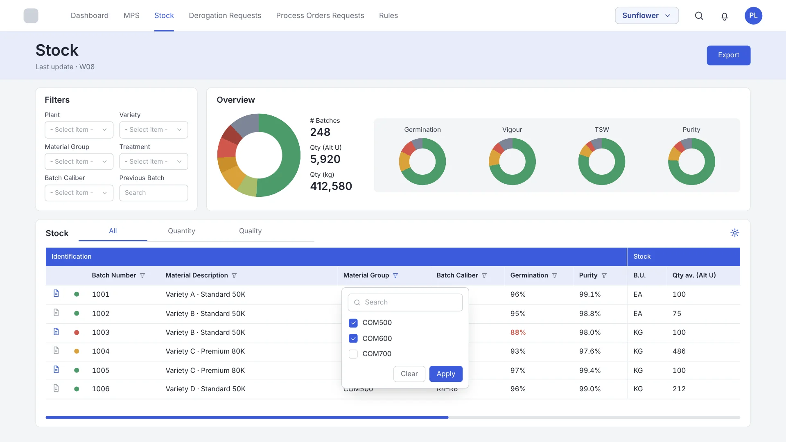
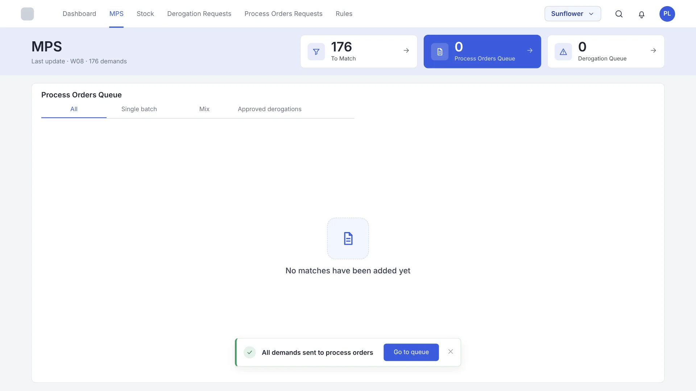
Diseñar para las excepciones.
El flujo principal salió del discovery; las excepciones, de testear en cada país. En una herramienta global, ellas deciden si funciona.